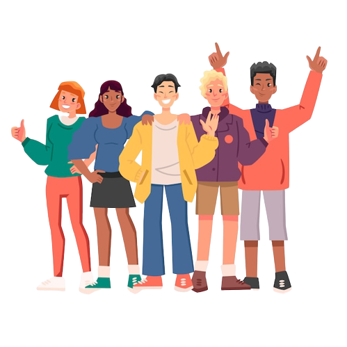
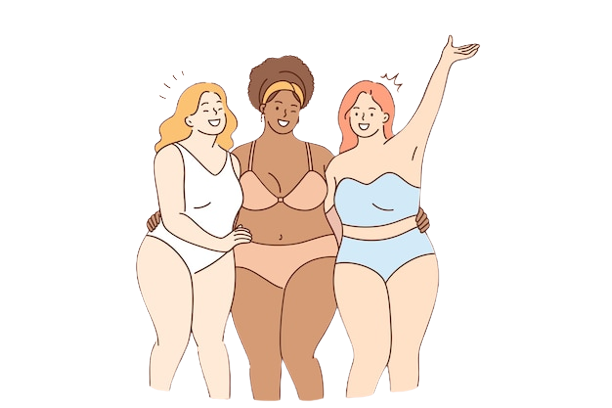
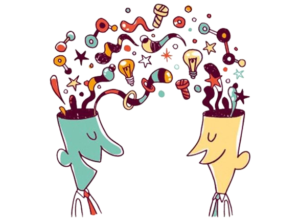
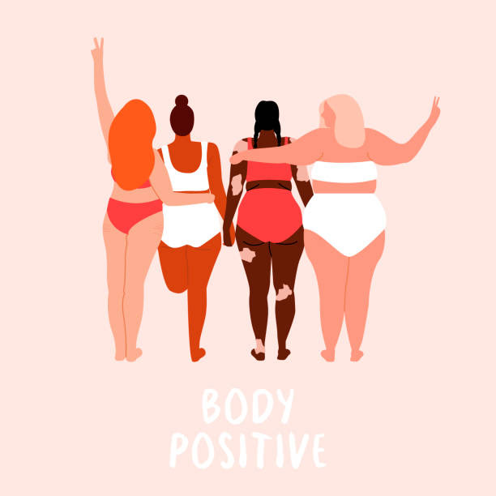
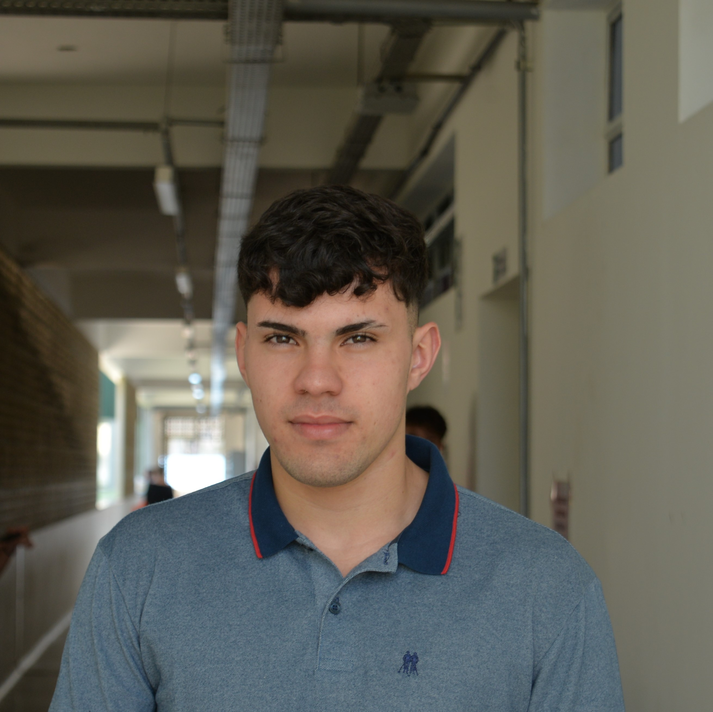

A população brasileira é formada pelo resultado de uma miscigenação de diversos povos. O maior foco desses povos se faz presente entre os portugueses, africanos e os indígenas. Porém, a partir do sec. XIX, vieram para o Brasil diversos imigrantes europeus e asiáticos, no entanto também constituem nosso "povo brasileiro"
Nos compararmos com outras pessoas tem se tornado algo comum em nossa rotina, e que se tornou mais frequente com o uso excessivo da internet, fato que nos levam à infelicidade elevando os níveis de estresse e ansiedade podendo causar até depressão.
A alteridade consiste no fato de possuirmos diversas diferenças presentes em uma pessoa e as compreender. Podemos exercitar a alteridade pensando na situação que o outro se encontra diante de anseios, angústias, medos e ao invés de criticarmos, podemos nos colocar no lugar dessa pessoa e tentar sentir como ele sente.
Na obra de Darcy Ribeiro "O povo brasileiro" uma das ideias principais é o começo da miscigenação das raízes brasileiras marcada pela criação de padrões e exclusão das pessoas que não se encaixam neles. Naquela época, as características físicas definiam lugar na sociedade, problema que a psicóloga e psicanalista Sheyna Vasconcellos aponta. Outro problema presente no mundo inteiro que é discutido por Platão desde a Grécia antiga é a falta de alteridade que mata as diferenças. Segundo uma pesquisa realizada pela revista ABM, uma em cada três jovens relatou que sua maior preocupação on-line era comparar a sua vida com a de outras pessoas por meio das redes sociais, alegando que se preocupam pela forma que isso afeta seu bem-estar. O que torna-se um problema nos dias de hoje, devido ao desgaste da saúde e o fato citado pela psicóloga Sheyna Vasconcellos, que diz que a geração atual tende a usar o corpo como cenário de exibição em busca de aprovações e curtidas, cometendo loucuras em busca do tão sonhado ‘’padrão’’ Dentre os inúmeros motivos que levaram a esses problemas de não aceitação está a falta de alteridade que se relaciona com a capacidade de perceber a si mesmo ou o próprio grupo social, não como padrão, mas também como indivíduo.
Mitcy saraiva é um estudante de 16 anos, programadora e líder do grupo Papo reto sites. Ela está cursando o primeiro ano do ensino médio técnico no IFSP-BRASIL. Ela ganhou olimpíadas de matemática e geografia e ganhou campeonatos estaduais de atletismo.
Rafael ribeiro é um estudante de 16 anos no primeiro ano de informática no IFSP-BRASIL. Ele é responsável pela programação e design do projeto To Be Free.
Isaque Maia é um estudante de 16 anos no primeiro ano de informatica no IFSP-BRASIL. Ele é responsável pelo design, planejamento da identidade visual do projeto, e administrador de nossas redes sociais.
Gustavo Sales é um estudante do primeiro ano de informatica no IFSP-BRASIL. Ele é responsável pelo design gráfico do site e administrador de nossas redes sociais.
Gabrielly Bernadelli é uma estudante de informática do IFSP-BRASIL. Ela é a pesquisadora e responsável pelas redações do projeto de inclusão social. Seu objetivo é incluir as pessoas na sociedades.
Vitor Hugo é estudante do primeiro ano de informática no IFSP-BRASIL. Ele é o redator dos textos do projeto e pesquisador.
O To Be Free é um movimento com o objetivo de conhecer pessoas e entender o por quê de tanta rejeição com seus próprios corpos e diferenças. Esse problema foi o nosso foco principal durante a pesquisa, reflexão, e confecção do site. Nossa mensagem para vocês foi inspirada em uma fala de um personagem do filme "Extraordinário" quando o protagonista ensina que carregamos, como humanos, carregamos não só a capacidade de ser gentis, mas sim a própria capacidade de escolha da gentileza.
phone_android
callTodos os direitos reservados para © 2022 Papo Reto sites Av. Bahia, 1739 - Indaiá, Caraguatatuba - SP, 11665-071